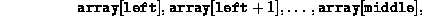
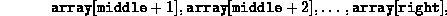
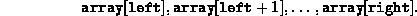
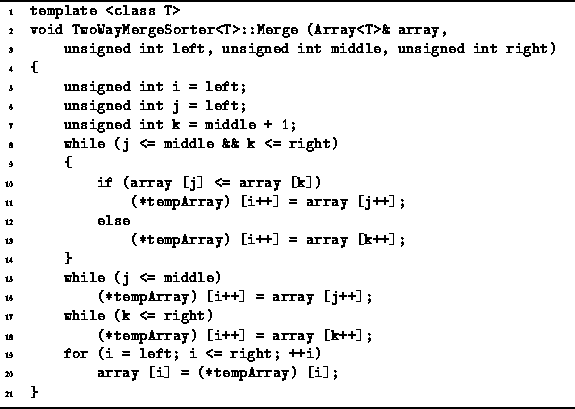
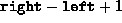
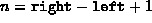

Data Structures and Algorithms
with Object-Oriented Design Patterns in C++
Data Structures and Algorithms
with Object-Oriented Design Patterns in C++
The Merge function of the TwoWayMergeSorter<T> class
is defined in Program  .
Altogether, this function takes four parameters:
The first is a reference to the array to be sorted.
The remaining three, left, middle, and right,
are unsigned integers.
It is assumed that
.
Altogether, this function takes four parameters:
The first is a reference to the array to be sorted.
The remaining three, left, middle, and right,
are unsigned integers.
It is assumed that
Furthermore, it is assumed that the two subsequences of the array,

and

are both sorted. The Merge routine merges the two sorted subsequences using the temporary array specified by tempArray. It then copies the merged (and sorted) sequence into the array at


Program: TwoWayMergeSorter<T> Class Merge Member Function Definition
In order to determine the running time of the Merge routine it is necessary to recognize that the total number of iterations of the three loops (lines 8-14, lines 15-16, and lines 17-18) is . The total number of iterations of the fourth loop (lines 19-20) is the same. Since all the loop bodies do a constant amount of work, the total running time for the Merge routine is O(n), where  is the total number of elements in the two subsequences that are merged.
 Copyright © 1997 by Bruno R. Preiss, P.Eng. All rights reserved.
Copyright © 1997 by Bruno R. Preiss, P.Eng. All rights reserved.